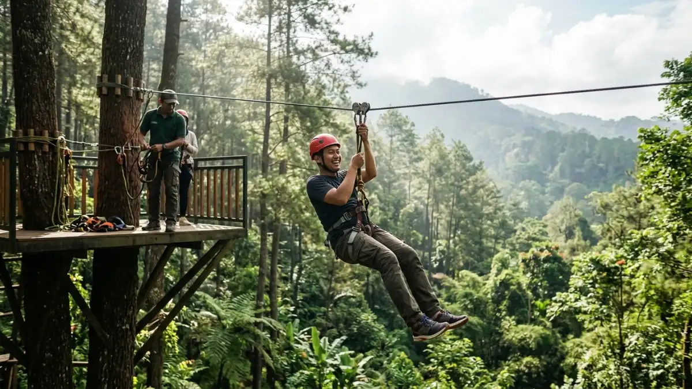

Ilustrasi kawasan outbound di Tretes, Prigen, Pasuruan dengan wahana treetop dan flying fox yang dikelilingi pepohonan hijau pegunungan.
Ilustrasi kawasan outbound di Tretes, Prigen, Pasuruan dengan wahana treetop dan flying fox yang dikelilingi pepohonan hijau pegunungan.
Tempat outbound di Tretes, Prigen, Pasuruan, mencakup taman petualangan, hotel berfasilitas outbound, dan area camping yang cocok untuk keluarga, sekolah, serta tim kantor.
- Tretes berada di Kecamatan Prigen, Kabupaten Pasuruan, sekitar 1,5 jam berkendara dari Surabaya.
- Pilihan tempat outbound di Tretes meliputi taman petualangan, hotel dengan program outbound, dan area camping.
- Tiket Tretes Treetop Adventure Park tercatat Rp170.000 untuk dewasa dan Rp125.000 untuk anak-anak pada pemberitaan Mei 2026.
- Pilih lokasi berdasarkan tujuan kegiatan, jumlah peserta, standar keselamatan, dan fasilitas pendukung.
- Mengapa Tretes Cocok Menjadi Lokasi Outbound?
- Apa Saja Tempat Outbound di Tretes yang Populer?
- Aktivitas Outbound Apa Saja yang Bisa Dilakukan di Tretes?
- Berapa Biaya Outbound di Tretes?
- Bagaimana Cara Memilih Tempat Outbound di Tretes?
- Mana yang Lebih Sesuai: Taman Petualangan, Hotel Outbound, atau Camping?
- Kapan Waktu Terbaik untuk Outbound di Tretes?
- Apa Kesalahan Umum Saat Merencanakan Outbound di Tretes?
- Apa yang Perlu Dipersiapkan Sebelum Berangkat?
- Kesimpulan
Mengapa Tretes Cocok Menjadi Lokasi Outbound?
Tretes cocok untuk outbound karena berhawa sejuk di lereng pegunungan, dekat dengan Surabaya, dan dikelilingi destinasi wisata alam serta akomodasi yang beragam.
Tretes adalah kawasan wisata pegunungan di Kecamatan Prigen, Kabupaten Pasuruan, Jawa Timur. Menurut panduan Wikivoyage edisi 2025, Tretes berjarak sekitar 1,5 jam berkendara dari Surabaya, sedangkan Trawas dan Pacet hanya sekitar 10 sampai 15 menit dari Tretes.
Jarak ini memudahkan rombongan dari Surabaya, Sidoarjo, Malang, dan sekitarnya untuk berangkat pagi lalu kembali pada sore hari.
Minat wisata di Jawa Timur sangat tinggi. Gubernur Jawa Timur menyampaikan bahwa pergerakan wisatawan selama libur Natal 2025 dan Tahun Baru 2026 mencapai 19,8 juta orang, sebagaimana dilaporkan Antara Jatim.
Di tingkat kabupaten, Pemerintah Kabupaten Pasuruan mencatat 2.378.297 kunjungan wisatawan sepanjang 2022.
Angka tersebut menunjukkan bahwa Pasuruan sudah lama menjadi tujuan wisata besar, sehingga layanan akomodasi, kuliner, dan transportasi di sekitar Tretes relatif matang.
Selain akses, Tretes menawarkan suasana alam yang mendukung kegiatan luar ruang. Kawasan Tretes berada di lereng Gunung Welirang, tempat Air Terjun Kakek Bodo berada, dan sejumlah penginapan di Prigen menawarkan pemandangan Gunung Penanggungan.
Udara yang lebih sejuk membuat aktivitas fisik ringan terasa lebih nyaman dibanding di dataran rendah.
Apa Saja Tempat Outbound di Tretes yang Populer?
Tempat outbound di Tretes yang populer meliputi Tretes Treetop Adventure Park, hotel yang menyediakan program outbound, dan area camping di sekitar Prigen serta Trawas.
Tretes Treetop Adventure Park
Taman Petualangan Tretes Treetop Adventure Park terletak di Jalan Raya Trawas, Desa Sumber Wekas, Kelurahan Lumbangrejo, Kecamatan Prigen.
Di lansir dari situs JawaPos pada Mei 2026 bahwa lokasi tersebut merupakan destinasi wisata outbound terbesar di Indonesia dan memiliki flying fox terpanjang di kawasan Asia Tenggara.
Klaim tersebut berasal dari pemberitaan, sehingga calon pengunjung sebaiknya memeriksa informasi resmi pengelola. Wahana yang disebut tersedia adalah treetop, flying fox, hammock, dan camping ground, dengan jam buka 08.30 sampai 18.00 WIB setiap hari.

Ilustrasi aktivitas flying fox di kawasan outbound Tretes, Prigen, salah satu wahana tantangan yang melatih keberanian peserta.Hotel dengan Program Outbound
Beberapa hotel di kawasan Tretes dan Trawas menyediakan atau membantu mengatur kegiatan outbound. Tiket.com mencantumkan Royal Senyiur Hotel di Prigen dengan keterangan bahwa tamu dapat mengatur outbound untuk pelatihan team building, serta Royal Hotel and Outbound Trawas.
Pilihan ini cocok bagi rombongan yang ingin menggabungkan penginapan, ruang pertemuan, dan kegiatan luar ruang. Panduan lengkap tersedia di artikel hotel outbound di Tretes dan cara memilihnya.
Camping Ground dan Area Terbuka
Tretes Treetop Adventure Park juga menyediakan camping ground bagi pengunjung yang ingin menikmati suasana alam pada malam hari.
Area terbuka seperti ini cocok untuk kegiatan kelompok yang sederhana, misalnya permainan tim, api unggun, atau kegiatan pramuka.
Pengelola biasanya menetapkan aturan kapasitas dan jam penggunaan, sehingga reservasi lebih awal sangat disarankan.
Aktivitas Outbound Apa Saja yang Bisa Dilakukan di Tretes?
Kegiatan outbound yang diselenggarakan di Tretes meliputi flying fox, treetop, hammock, permainan kelompok, dan camping, dengan derajat kesulitan yang dapat disesuaikan berdasarkan usia dan tujuan para peserta.
Kegiatan yang dilakukan di ketinggian, termasuk aktivitas di puncak pohon dan flying fox, berfungsi untuk mengembangkan keberanian, meningkatkan konsentrasi, serta membangun kepercayaan terhadap anggota tim. Hammock dan area santai memberi ruang istirahat di sela kegiatan fisik.
Permainan kelompok di tanah lapang, yang sering disebut low element, melatih komunikasi dan pembagian peran tanpa risiko ketinggian.
Kegiatan jelajah alam juga bisa ditambahkan. Para peserta memiliki kesempatan untuk mengeksplorasi berbagai air terjun yang tersebar di kawasan Tretes, termasuk Air Terjun Kakek Bodo yang diketahui mencapai ketinggian kurang lebih 40 meter, dengan didampingi oleh pemandu wisata lokal yang berpengalaman.
Untuk tim kantor, kombinasi permainan kelompok dan sesi refleksi biasanya lebih bermakna daripada sekadar wahana. Contoh rancangan lengkapnya dibahas di artikel outbound team building di Tretes untuk tim kantor.
Berapa Biaya Outbound di Tretes?
Biaya outbound di Tretes bervariasi; tiket Tretes Treetop Adventure Park per Mei 2026 Rp170.000 untuk dewasa dan Rp125.000 untuk anak-anak; komponen lain dihitung terpisah.
Angka Rp170.000 dan Rp125.000 tersebut berasal dari pemberitaan JawaPos pada Mei 2026 dan dapat berubah sewaktu-waktu. Biaya paket outbound dari penyelenggara atau hotel umumnya mengikuti durasi, jumlah peserta, jumlah fasilitator, konsumsi, dan penginapan.
Karena komponennya banyak, rombongan sebaiknya meminta penawaran tertulis yang merinci apa saja yang sudah termasuk.
Bagaimana Cara Memilih Tempat Outbound di Tretes?
Pilih tempat outbound di Tretes berdasarkan tujuan kegiatan, jumlah peserta, standar keselamatan, fasilitas pendukung, dan akses transportasi, lalu konfirmasi langsung ke pengelola.
Kriteria berikut membantu menyaring pilihan:
- Tujuan kegiatan: hiburan keluarga, pembelajaran siswa, atau pengembangan tim kantor membutuhkan format yang berbeda.
- Jumlah dan usia peserta: pastikan batas usia, tinggi badan, dan kapasitas rombongan sesuai ketentuan wahana.
- Standar keselamatan: tanyakan peralatan pengaman, briefing sebelum bermain, rasio pemandu terhadap peserta, dan prosedur darurat.
- Fasilitas pendukung: periksa ketersediaan toilet, musala, area parkir bus, ruang makan, dan ruang pertemuan.
- Akses dan waktu tempuh: rombongan bus perlu memastikan jalan menuju lokasi dapat dilalui kendaraan besar.
- Rencana cadangan hujan: lokasi yang baik memiliki alternatif kegiatan di bawah atap.
Konfirmasi langsung penting karena informasi di internet, termasuk harga dan jam buka, dapat berubah tanpa pemberitahuan.
Mana yang Lebih Sesuai: Taman Petualangan, Hotel Outbound, atau Camping?
Taman petualangan cocok untuk wahana tantangan, hotel outbound cocok untuk program terpadu dengan penginapan, dan camping cocok untuk kegiatan alam yang sederhana.
| Pilihan | Cocok untuk | Kelebihan | Batasan |
|---|---|---|---|
| Taman petualangan | Keluarga, remaja, tim kantor | Wahana tantangan siap pakai | Jadwal dan kapasitas wahana terbatas |
| Hotel dengan outbound | Gathering kantor, rapat sekaligus kegiatan | Penginapan, konsumsi, dan kegiatan dalam satu paket | Variasi wahana bergantung pada hotel |
| Camping ground | Komunitas, sekolah, organisasi | Suasana alam dan kegiatan fleksibel | Perlu persiapan perlengkapan dan cuaca yang mendukung |
Rombongan besar dengan agenda rapat biasanya lebih nyaman memakai paket hotel. Keluarga dengan anak atau kelompok remaja umumnya lebih tertarik pada taman petualangan.
Komunitas dengan anggaran terbatas dapat mempertimbangkan camping, selama izin dan keselamatan terpenuhi.
Kapan Waktu Terbaik untuk Outbound di Tretes?
Waktu terbaik outbound di Tretes umumnya pagi hari pada hari kerja saat cuaca cerah, karena pengunjung lebih sedikit dan kondisi pegunungan lebih mudah diprediksi.
Tretes Treetop Adventure Park buka mulai 08.30 WIB, sehingga rombongan dapat memulai kegiatan sebelum siang.
Cuaca di kawasan pegunungan dapat berubah cepat, dan hujan sore hari relatif sering terjadi pada musim penghujan. Periksa prakiraan cuaca dari BMKG beberapa hari sebelum berangkat dan siapkan jadwal alternatif.
Musim libur panjang, seperti Natal dan Tahun Baru, membuat kawasan wisata Jawa Timur sangat ramai. Pada periode tersebut, antrean wahana dan kepadatan jalan menuju Tretes dapat meningkat. Reservasi jauh hari dan keberangkatan lebih awal membantu menjaga jadwal tetap aman.
Apa Kesalahan Umum Saat Merencanakan Outbound di Tretes?
Kesalahan umum meliputi tidak mengonfirmasi harga terbaru, mengabaikan briefing keselamatan, salah menghitung waktu perjalanan, dan tidak menyiapkan rencana cadangan saat hujan.
- Tidak memeriksa harga terbaru: harga tiket dan paket dapat berubah, sehingga anggaran harus dikonfirmasi ulang menjelang hari kegiatan.
- Mengabaikan briefing keselamatan: peserta yang melewatkan arahan awal lebih berisiko salah memakai peralatan.
- Meremehkan waktu tempuh: perjalanan sekitar 1,5 jam dari Surabaya dapat memanjang saat akhir pekan atau libur.
- Menjadwalkan terlalu padat: terlalu banyak wahana dalam satu hari membuat peserta kelelahan dan mengurangi kualitas pengalaman.
- Tidak menyiapkan rencana hujan: tanpa agenda alternatif, kegiatan terpaksa dibatalkan atau dipersingkat.
- Mengabaikan kondisi kesehatan peserta: peserta dengan kondisi tertentu perlu diberi opsi aktivitas yang lebih ringan.
Apa yang Perlu Dipersiapkan Sebelum Berangkat?
Persiapan outbound di Tretes meliputi pakaian dan sepatu tertutup, jaket tipis, air minum, obat pribadi, peralatan hujan, serta pemeriksaan kondisi kesehatan peserta.
Kenakan pakaian yang nyaman dan sepatu tertutup dengan sol yang tidak licin. Bawa jaket tipis karena suhu di kawasan pegunungan umumnya lebih rendah, terutama pagi dan sore hari. Tambahkan jas hujan atau ponco, tabir surya, dan botol minum pribadi.
Panitia perlu membawa kotak P3K, daftar kontak darurat, dan salinan daftar peserta. Pastikan juga ada penanggung jawab rombongan yang berkomunikasi dengan pemandu atau pengelola lokasi.
Untuk informasi pariwisata daerah, rujukan resmi tersedia di situs Pemerintah Kabupaten Pasuruan, sedangkan daftar destinasi di sekitar Tretes dapat dibaca pada ulasan JawaPos tentang wisata Tretes.
Kesimpulan
Tempat outbound di Tretes menawarkan kombinasi taman petualangan, hotel berprogram outbound, dan area camping dengan akses sekitar 1,5 jam dari Surabaya.
Tentukan dulu tujuan kegiatan dan jumlah peserta, lalu bandingkan lokasi berdasarkan keselamatan, fasilitas, dan biaya. Konfirmasi harga serta jam buka langsung ke pengelola, dan siapkan rencana cadangan hujan.
FAQ